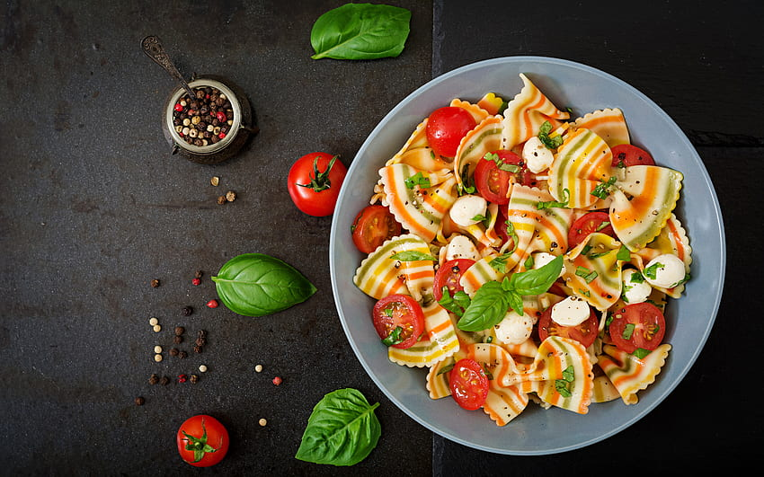

-

Pasta Salad
Ingredients
- Cheese / Corn Flour - 1/4 cup
- Sesame Seed - 1 tablespoon
- Paprika - 1 teaspoon
- Spring Onion - 1 teaspoon
- Salt - 1½ teaspoon
- Garlic Powder - 1½ teaspoon
- Black Pepper - ½ teaspoon
- Italian Dressing
- Cherry Tomatoes - 2 cups, cut
- Green Bell Pepper - 1, chopped
- Red Bell Pepper - 1, chopped
- Yellow Bell Pepper - ½, chopped
- Pasta (Twist) - A pack or two
- Olives - 1/4 cup, chopped
- Virgin Oil - ½ cup
- Lemon Juice - 1/4 cup
- Honey and Mustard - 2 tablespoons each
Method of Preparation
In a bowl, mix cheese / corn flour, sesame seed, paprika, spring onion, salt, garlic powder and black pepper. Add a can of italian dressing or a mixture of virgin oil, lemon juice, honey and mustard and mix
Cook the pasta according to package instructions until al-dente. Cool down completely and pour into the bowl. Add in tomatoes, peppers, olives and the dressing. Mix thoroughly and refrigerate overnight.